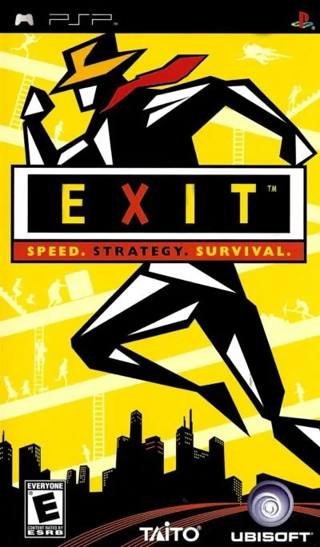

PSP
Exit
- Año: 2006
- Desarrollador: Taito
- Género: Plataformas
Exit es un videojuego de plataformas donde en cada nivel, el objetivo es que el personaje principal, Mr. ESC, escapista de profesión, encuentre la salida antes de que se acabe el tiempo, limitado en cada fase.
Para ello, Mr. ESC deberá, manipulando objetos del entorno a su favor, abrirse camino por hospitales, metros, y otros edificios, sobreviviendo a grandes incendios o terremotos.
También Mr. ESC puede encontrarse con individuos que han quedado atrapados en la misma fase que él, y deberá conducirlos (a veces opcional, y otras, obligatoriamente) a la salida. También podrá ordenarles ir a algún sitio concreto, o interactuar con el escenario; por ejemplo un señor atrapado puede, bajo las órdenes de Mr. ESC, pulsar un botón que mantiene abierta una compuerta mientras Mr. ESC pasa a través de ella.
El juego tiene 100 niveles, más otros 100 que se pueden descargar gratuitamente de la página oficial del juego.
Controles
que Mr. ESC se mueva con el joystick y qué botones saltan y dan órdenes. Según una revista japonesa: L hace que los compañeros te sigan o esperen, y Coin (Select) enseña el mapa de la fase. ¿Va fluido?
Mando de PSP. El joystick mueve la cruceta y también la palanca analógica, porque muchos juegos de PSP solo se mueven con ella.
| Panel | Juego |
|---|---|
 | ✕ |
 | ○ |
 | R |
 | □ |
 | △ |
 | L |
 | Start |
 | Select |
+  | Salir del juego |
El panel en PSP


Argumento
Recopilado de internet (2026-11-04). Lo marcado con ⚠️ no está probado en la bartop.
No tiene una historia larga: el protagonista, Mr. ESC, es un especialista en huidas que entra en edificios en peligro (con fuego, agua, derrumbes…) para rescatar a la gente atrapada y sacarla por la salida antes de que se acabe el tiempo.
Fuentes
Jugabilidad
Recopilado de internet (2026-11-04). Lo marcado con ⚠️ no está probado en la bartop.
- Puzles de plataformas de Taito: en cada nivel hay que llegar a la salida, normalmente tras rescatar a todos o a parte de los atrapados, con tiempo límite.
- Mr. ESC corre más, salta más alto y nada mejor que nadie, pero también se hace daño con los peligros y las caídas.
- Cuatro tipos de atrapados: jóvenes (trepan obstáculos medianos, saltan y ayudan), niños (solo trepan cosas pequeñas, pero pasan por huecos estrechos), adultos (empujan objetos muy grandes, pero necesitan ayuda para trepar) y heridos (hay que llevarlos en brazos o en camilla).
- Órdenes: a los atrapados (menos a los heridos) se les puede mandar ir a un sitio o usar e intercambiar herramientas, pero primero hay que tocarlos para calmarlos.
- Obstáculos: cajas para hacer escalones, fuegos que hay que apagar, agua (solo Mr. ESC nada), puertas de un solo sentido, paredes de roca, cables eléctricos, zonas a oscuras (hace falta linterna)…
- Si alguien se hiere, lo saca Jet, el rival de Mr. ESC; si se hieren demasiados o se hiere Mr. ESC, hay que repetir el nivel.
- Puntuación: hasta 100 puntos por nivel, según la gente rescatada y el tiempo.
- Tiene segunda parte, Exit 2 (2006).
Botones según las guías (⚠️ por confirmar)
| Mando de PSP | Panel | Acción |
|---|---|---|
| Palanca |  | Mover a Mr. ESC (andar, correr, saltar, colgarse, gatear) |
| L | | Mandar a un compañero que te siga o que espere |
| Select | | Ver el mapa de la fase (el tiempo sigue corriendo) |
- ⚠️ Según una revista japonesa; no he encontrado qué botón salta ni con cuál se dan las demás órdenes.
Guía de niveles
Recopilado de internet (2026-11-04). Lo marcado con ⚠️ no está probado en la bartop.
- 100 niveles, pensados para partidas cortas; 70 están disponibles desde el principio.
- ⚠️ No he encontrado una guía por niveles: ver «Vídeos».
Fuentes
Objetos
Recopilado de internet (2026-11-04). Lo marcado con ⚠️ no está probado en la bartop.
| Objeto | Qué hace |
|---|---|
| Extintor | Apaga los fuegos |
| Pico | Rompe las paredes de roca |
| Linterna | Deja ver en las zonas a oscuras |
| Caja | Se empuja para hacer escalones |
| Camilla | Para llevar a los heridos |
Fuentes
Trucos y secretos
Recopilado de internet (2026-11-04). Lo marcado con ⚠️ no está probado en la bartop.
- ⚠️ No he encontrado trucos.
Fuentes
Longplay

Partida de la versión PSP en español (45 min), de Jose Luis: Exit (Español) de Playstation Portable (PSP) con el emulador PPSSPP.